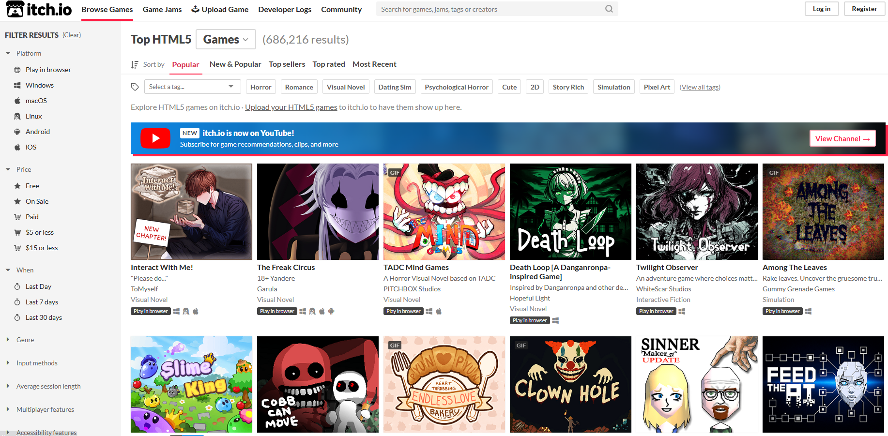
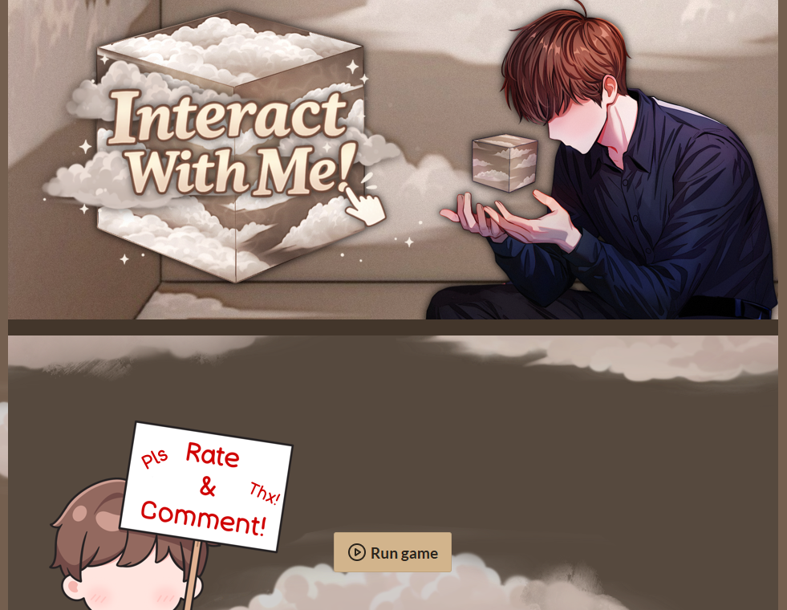
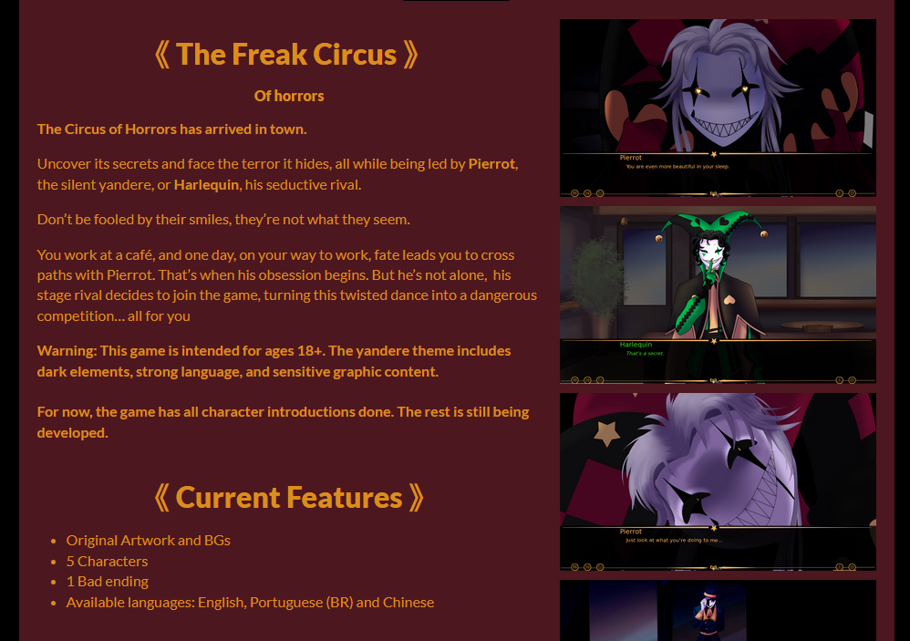
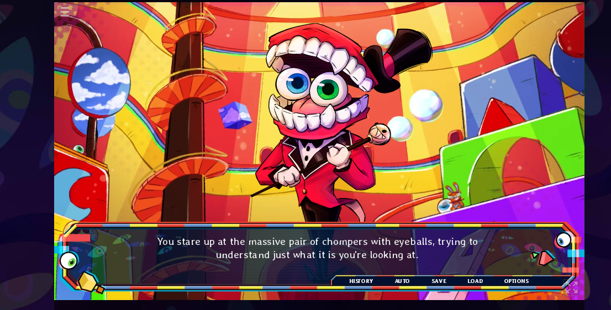
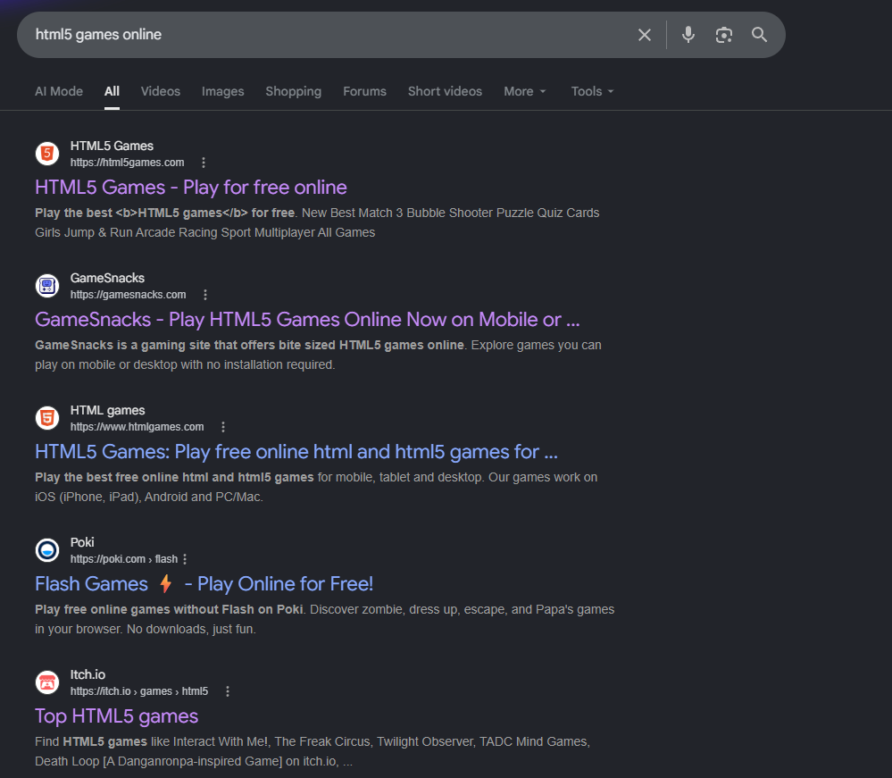
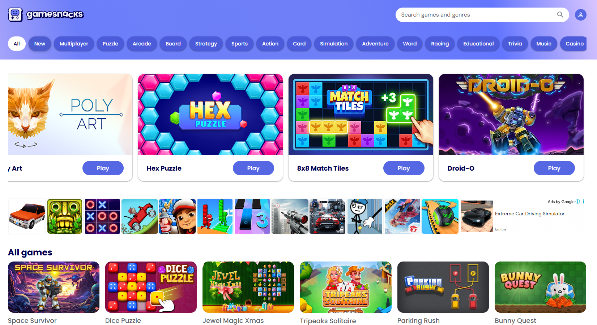
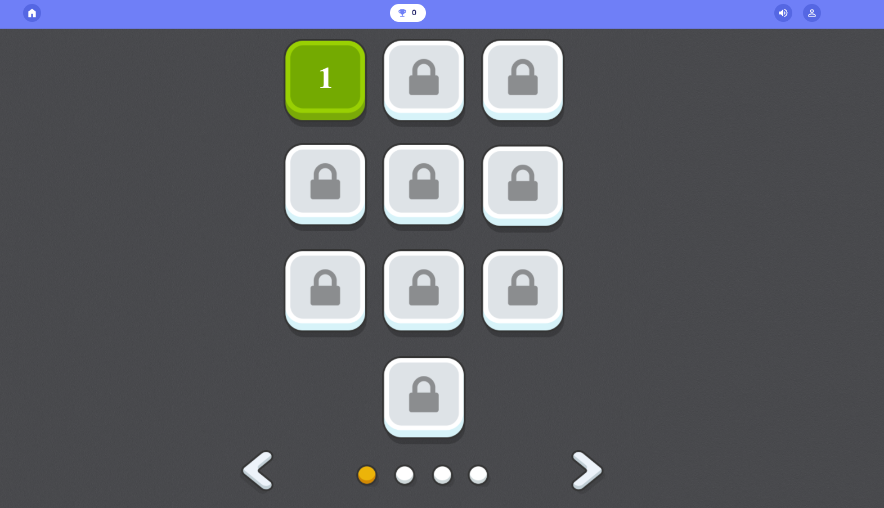
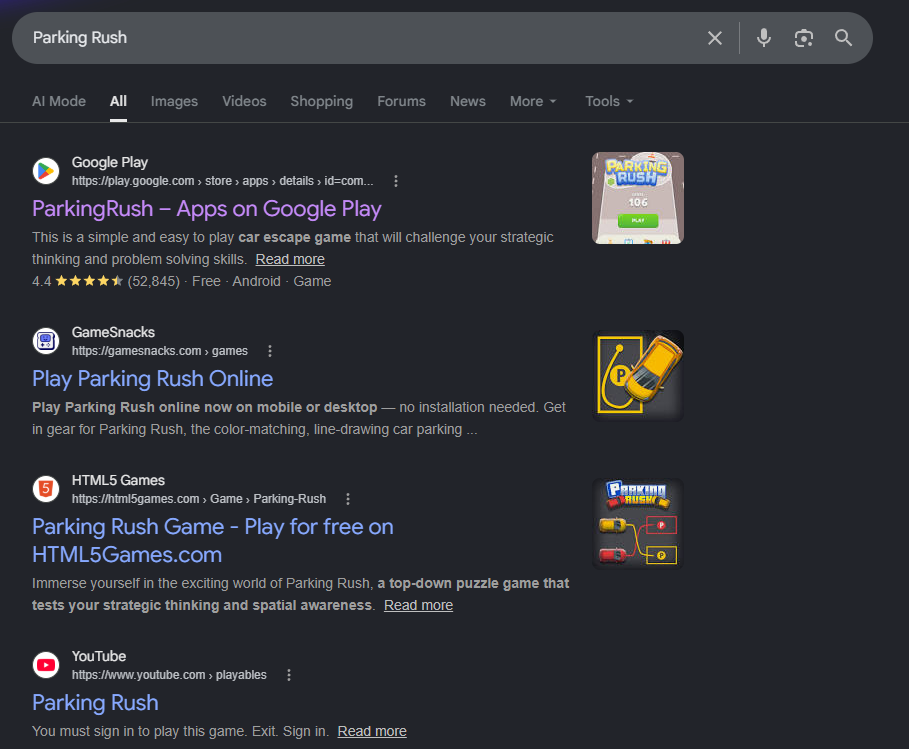

If you search for web gaming portals today, you will be met with a wall of commercial clones running heavy, closed-off builds that hog memory and take ages to load. Many of these portals rely on bloated WebGL engines that compile to hundreds of megabytes. Running a simple puzzle game should not send your CPU fan spinning into overdrive or require downloading a game engine run-time just to render a grid.
Frybahn was born out of a desire for a cleaner, faster web.
By hosting pure HTML5 and JavaScript creations—primarily those written under the tight constraints of game jams like JS13K— I offer games that load instantly and operate efficiently even on low-end hardware.
I believe that web gaming should be open, inspectable, and incredibly lightweight.
How about the HTML5 games at itch?
Let us take an unbiased look at some of these games on the itch platform.
Searching for the most popular options gives the following search results.

This is 2026 June. The listing will change when you check this later, as more games get added and the popularity of games change. However, we can evaluate the top 3 games in the list and check the following parameters.
- The size of the install
- License of distribution
- System requirements required to play the game
- Complexity of the game itself
- Browser compatibility and support
Interact with Me

The game is relatively lightweight since this is a visual interactive horror game, created with Renpy. The SDK is not cheap in terms of resources (at 150 MB), considering that this is just a visual engine.The end game of course needs to load the entire SDK. The images are other resources are all baked in the game \- the larger the story, the greater the load times.
You can play the game in the browser, or you can choose to download the executable and then play it locally.
The size? 200+ MB.
Also, can I see the code behind it?
No. The engine is free and open source. But the game resources are all locked behind the packed engine output.
Now we go to the next game in the list.
Enter Freak Circus

This is yet another visual story based game that used the exact same engine as the one before.The gameplay is a little more engaging, and there are more than one endings. You can play this in the browser as well. But the download size exceeds 400 MB for this one.
If you are short on system memory, you may be out of luck with this one.
The browser task manager shows about a quarter of a GigaByte taken up to play just one browser game.
This is closed source as well. This will be a noticeable pattern here.
TADC Mind Games
This one took the cake in being weird beyond imagination.

I am not sure what to think of this, but the exact same Renpy engine is used here as well.The download size exceeds 200 MB for the whole game, the demo is a tad lighter.
Bottomline for itch games
Are these games fun?
Yes.
Will you replay these ever again?
Most likely not.
Can you play this on a potato PC?
Mostly yes, as long as you have more than 2 GB of system memory, you should be fine.
But if you want to tinker around the games, you will be completely out of luck. These are all closed source.
We can look at some of the other more popular HTML5 games around.
We can do a Google Search.
Other HTML5 games

Lets go to one of the top 2 games here.
I am lucky that my ad blocker is enabled. Otherwise, look at the sneaky ad placement in between two game rows.I have nothing against having advertisements. But theming them to look like the rest of your website to ensure you get more clicks?
I feel a bit uneasy about that. But hey, that’s just me.
My biggest gripe is this.
Take any game. Click on any of them and wait till they load.

Any source code for this?
Nada.
This is not new. The name of the game is Parking Rush.

The same game is hosted in a million different places.The portals make money simply by getting clicks on ads. That is the only objective.
In fact, you can play the exact same game on YouTube as well!
Enter Frybahn
This is why I thought of creating a simple portal where anyone can come, play and learn about the simplest technologies that make up the web and appreciate what is possible within just a few KBs and minimal resources.